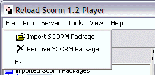

File Menu
The File menu contains three items.

Import SCORM Package
Import SCORM Package (File, Import SCORM Package) opens an existing SCORM 1.2 Content Package (CP) and adds it to the player's package list.
Remove SCORM Package
Remove SCORM Package (File, Remove SCORM Package) removes the currently selected package from the player's package list.
Exit
The Exit Menu item (File, Exit) quits the RELOAD SCORM Player.